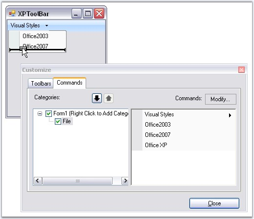
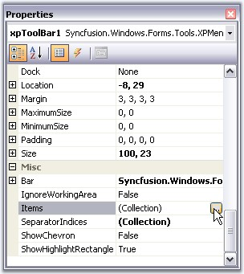
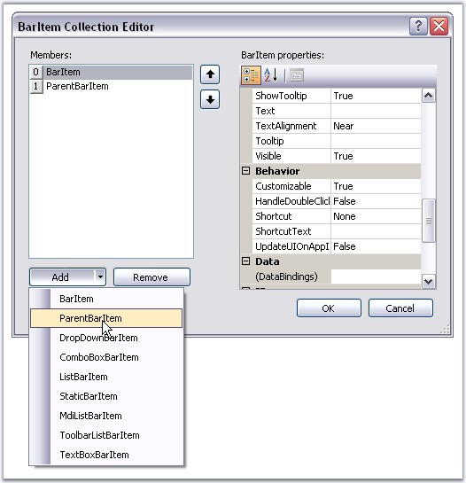
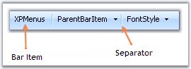

Adding XPToolBar to XPMenus
Drag and drop an XPToolbar control onto the form.
Supported BarItem types
The various types of BarItems supported by XPToolBar are:
· BarItem
· ParentBarItem
· DropDownBarItem
· ComboBoxBarItem
· StaticBarItem
· TextBoxBarItem
· ListBarItem
· MDIListBarItem
· ToolbarListBarItem
Filling the XP Toolbar with Items from the BarManager
You can drag-and-drop items from the Customize dialog of the BarManager into the XP Toolbar, in the same way you filled the menus and toolbars.

Figure 806: Filling XP Toolbar
In the presence of a BarManager, you can also add separators to the items by right-clicking on the items and selecting the Begin A Group option similar to Menus. See Grouping Bar Items.
Filling the XP ToolBar through the BarItems Collection Editor
During design-time, in the absence of BarManager, the XP Toolbar can be filled through the BarItems collection editor, which is invoked using Items property. In the collection editor, you can add any of the available BarItem types to the XP Toolbar's list. A customized text can be provided for the BarItems using Text property.
|
XPToolBar Property |
Description |
|
Items |
Indicates bar items collections. |

Figure 807: Accessing BarItems Collection Editor through Items Property

Figure 808: Adding bar items through BarItem Collection Editor
 Note: This control is not normally used to
create toolbars in the XP Menus. This is meant to be used within the form as a
stand-alone control.
Note: This control is not normally used to
create toolbars in the XP Menus. This is meant to be used within the form as a
stand-alone control.
|
[C#]
this.barItem10.Text = "XPMenus"; this.parentBarItem2.Text = "ParentBarItem"; |
|
[VB.NET]
Me.barItem10.Text = "XPMenus" Me.parentBarItem2.Text = "ParentBarItem" |
Adding Separators
In the absence of a BarManager, you can add separators to the items by editing the XPToolBar.SeparatorIndices property list.
|
XPToolBar Property |
Description |
|
SeparatorIndices |
Specifies the Indices values after which the separator have to be placed in an XPToolbar. |
|
[C#]
this.xpToolBar1.SeparatorIndices.AddRange(new int[] {1, 2}); |
|
[VB.NET]
Me.xpToolBar1.SeparatorIndices.AddRange(New Integer() {1, 2}) |

Figure 809: Separators added to the XPToolBar
The XPToolbars sample in the following installation path, shows how an XP toolbar can be used in an application.
..My Documents\Syncfusion\EssentialStudio\Version Number\Windows\Tools.Windows\Samples\2.0\Menus Package\XPToolBars
See Also